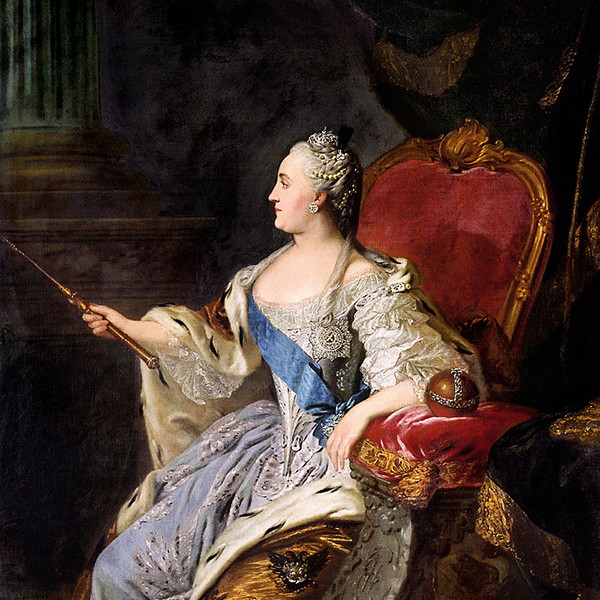
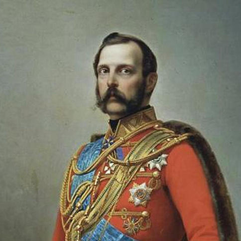
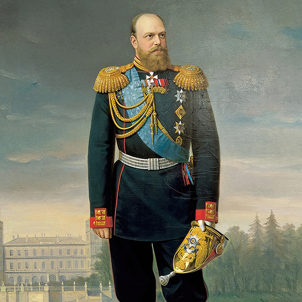
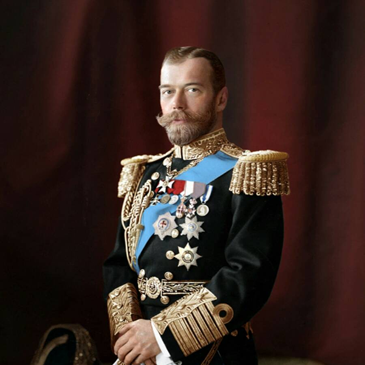

-

Петр I Алексеевич «Великий»
- Годы правления: 1682 – 1725 (с 1721 — император)
- Создал Российскую Империю, победил в Северной войне, «прорубил окно в Европу», основал
Санкт-Петербург, провел масштабные реформы.
-

Екатерина I Алексеевна
- Годы правления: 1725 – 1727
- Вторая жена Петра I. Фактическую власть осуществлял Верховный тайный совет во главе с А.Д.
Меншиковым.
-

Петр II Алексеевич
- Годы правления: 1727 – 1730
- Внук Петра I, последний представитель династии Романовых по прямой мужской линии. Умер от оспы в 14
лет.
-

Анна Иоанновна
- Годы правления: 1730 – 1740
- Племянница Петра I. Период «бироновщины» — засилье немцев при дворе. Войны с Османской империей и за
польское наследство.
-

Иван VI Антонович
- Годы правления: 1740 – 1741
- Правнук Ивана V. Провозглашен императором в двухмесячном возрасте. Свергнут в результате дворцового
переворота. Всю жизнь провел в заточении и был убит.
-

Елизавета Петровна
- Годы правления: 1741 – 1762
- Дочь Петра I. Пришла к власти в результате переворота. Эпоха расцвета культуры (основание
Московского университета), победа в Семилетней войне.
-

Петр III Федорович
- Годы правления: 1761 – 1762
- Внук Петра I. Немецкий князь из Гольштейн-Готторпской линии. За 6 месяцев правления успел издать
«Манифест о вольности дворянства» и вернуть Пруссии все завоевания в Семилетней войне. Свергнут и
убит в результате переворота своей женой Екатериной.
-

Екатерина II Алексеевна «Великая»
- Годы правления: 1762 – 1796
- Немецкая принцесса, жена Петра III. «Золотой век» российского дворянства. Значительно расширила
территорию империи (разделы Польши, Крым, Новороссия). Провела губернскую реформу, усилила
крепостное право (Пугачевский бунт).
-

Павел I Петрович
- Годы правления: 1796 – 1801
- Сын Екатерины II и Петра III. Издал указ о престолонаследии, ограничил привилегии дворян, ввел
жесткую дисциплину в армии. Убит заговорщиками в Михайловском замке.
-

Александр I Павлович «Благословенный»
- Годы правления: 1801 – 1825
- Сын Павла I. Победитель Наполеона в Отечественной войне 1812 года. Участвовал в Венском конгрессе.
Эпоха либеральных начинаний и мистицизма. Таинственная смерть в Таганроге породила легенду о «старце
Федоре Кузьмиче».
-

Николай I Павлович «Палкин»
- Годы правления: 1825 – 1855
- Ключевое: Брат Александра I. Вступил на престол при подавлении Восстания декабристов. Апологет
самодержавия, порядка и военной дисциплины («жандарм Европы»). Эпоха жесткой цензуры и кодификации
законов. Проиграл Крымскую войну.
-

Александр II Николаевич «Освободитель»
- Годы правления: 1855 – 1881
- Сын Николая I. Провел «Великие реформы»: отменил крепостное право (1861), провел судебную, земскую,
военную реформы. Присоединил Среднюю Азию и Дальний Восток. Убит террористами из «Народной воли».
-

Александр III Александрович «Миротворец»
- Годы правления: 1881 – 1894
- Сын Александра II. Контрреформы, курс на консервацию существующего строя. Укрепление государственной
власти и полицейского режима. Внешняя политика была преимущественно мирной. Эпоха промышленного
подъема.
-

Николай II Александрович
- Годы правления: 1894 – 1917
- Последний император Всероссийский. Сын Александра III. При нем произошли: Русско-японская война,
Первая русская революция (1905-1907), вступление в Первую мировую войну. Отрекся от престола в ходе
Февральской революции 1917 года. Расстрелян вместе с семьей в Екатеринбурге. Причислен РПЦ к лику
страстотерпцев.